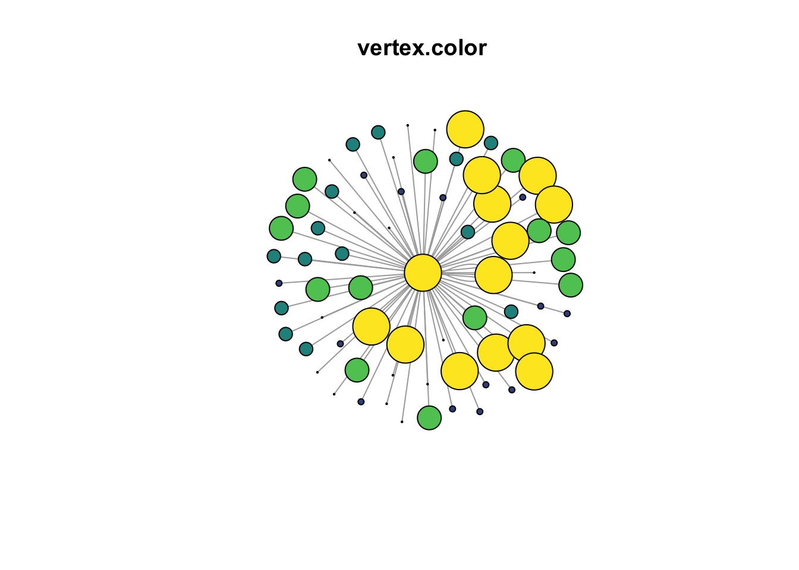
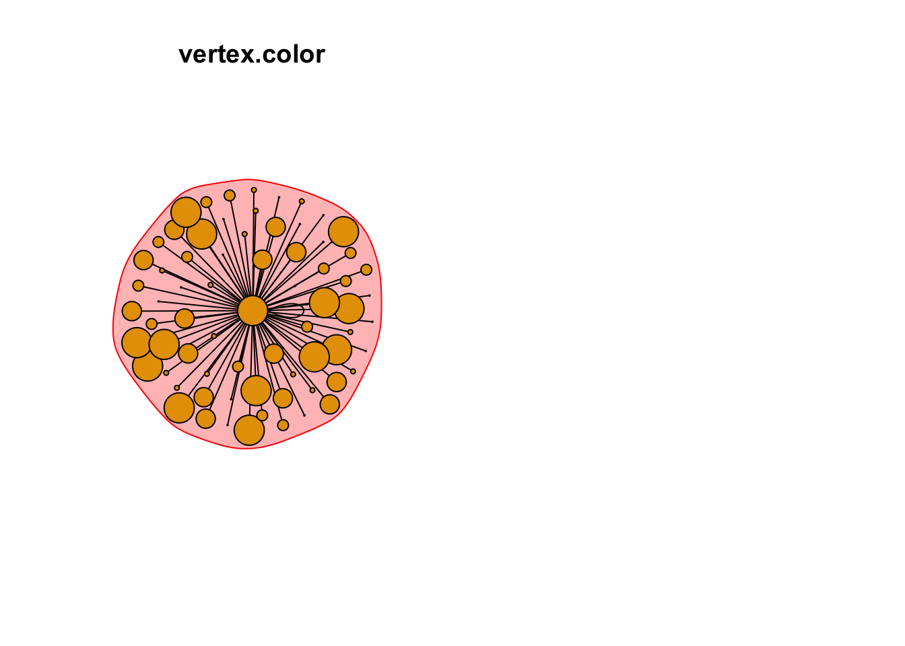

Chapter 8 Case Study – SOI Tax Stats
The IRS provides information on migration from IRS tax forms. Its Migration Data Users guide “provides a detailed description of the State-to-State, County-to-County, and Gross Migration files produced by the Internal Revenue Service (IRS) Statistics of Income (SOI) Division. IRS Migration data for the United States are based on year-to-year address changes reported on individual income tax returns filed with the IRS. They present migration patterns by State or by county and are available for inflows—the number of new residents who moved to a State or county and where they migrated from, and outflows—the number of residents leaving a State or county and where they went. The data also include tabulations on the number of non-migrant returns within a State or county.” The latest year available was for 2017-2018.
8.1 County-to-county Outflow data
“The County-to-County outflow migration files represent the migration flows from the origin state and county, in year one, to the destination state and county, in year two. There are 51 files for each state plus the District of Columbia. Included in the list of county flows are the number of returns that migrated to a foreign location [4]. The migration flows include the following county equivalents (Parishes in Louisiana, Boroughs, Census Areas, and municipalities in Alaska, independent cities, such as Baltimore, Maryland, and the District of Columbia).”
8.2 Read Data
The data was prepared prior to import in the book here. The data represent return filers whose address changed from Miami-Dade county in year one to some other county in year 2. Additionally, only counties that received greater than 100 new residents from Miami were included.
# import
edges <- data.table::fread("./data/irs/miami-out-migration-edges.csv")
nodes <- data.table::fread("./data/irs/miami-out-migration-nodes.csv")
# create network
g1 <- igraph::graph_from_data_frame(d = edges,
directed = T,
vertices = nodes
)
#remove self-loops, people that moved w/in county
g1 <- simplify(g1,
remove.multiple = F,
remove.loops = T
)8.3 First Plot
It’s usually a good idea to see if the data will plot first so that any residual and obvious problems can be addressed. Here, a graph object was successfully created and plotted with plot(g1).
Figure 8.1: A plot using igraph defaults.
8.4 Open the Space
The plot above is unreadable when rendered with igraph defaults, but shows the importance of formatting. It also shows the difficulty of trying to make sense of the data when it is jumbled. The next step is to simplify the plot so that the formatting process can begin. Three suggestions are to omit labels, reduce vertex size and minimize arrow size.
Figure 8.2: Formatting arguments to open graphing space.
8.5 Set Variable for Vertex Size
Vertex size is a graph attribute that is often scaled to a variable. Here, the size is scaled to the number of returns or persons who moved from Maimi-Dade County. The node$returns variable was cut into quintiles of equal size and assigned to a new column as quintile. Since the nodes dataframe was changed, it must be converted again into a new graph object.
8.6 Set Vertex Color
The color of the node is often a prominent attribute that can contribute to the understanding of the graph. Five colors were assigned to each of the quintiles of the returns from the vidiris package. Thus, nodes that are large in size realtive to the other nodes and colored yellow are featured prominently in the graph. These are the counties that received the highest numbers of out-migration from Miami-Dade.
#create node color palette and merge w/ node df
my.colors <- tibble(quintile = 1:5,
colors = viridis(5, option = "D")
)
nodes <- dplyr::left_join(nodes, my.colors, by = "quintile")Figure 8.3: Node attributes set for size and color.
8.7 Layout of nodes
g4 <- igraph::graph_from_data_frame(d = edges,
directed = F,
vertices = nodes
)
plot(g4,
vertex.label = NA,
vertex.size = V(g3)$quintile ^2,
vertex.color = V(g3)$colors,
edge.arrow.size = .1,
main = "vertex.color"
)
par(mfrow=c(1,2))
# Community detection based on label propagation:
clp <- cluster_label_prop(g4)
class(clp)## [1] "communities"# Community detection returns an object of class "communities" # which igraph knows how to plot:
plot(clp,
g4,
vertex.label = NA,
vertex.size = V(g3)$quintile ^2,
vertex.color = V(g3)$colors,
edge.arrow.size = .1,
main = "vertex.color"
)
# We can also plot the communities without relying on their built-in plot:
V(g4)$community <- clp$membership